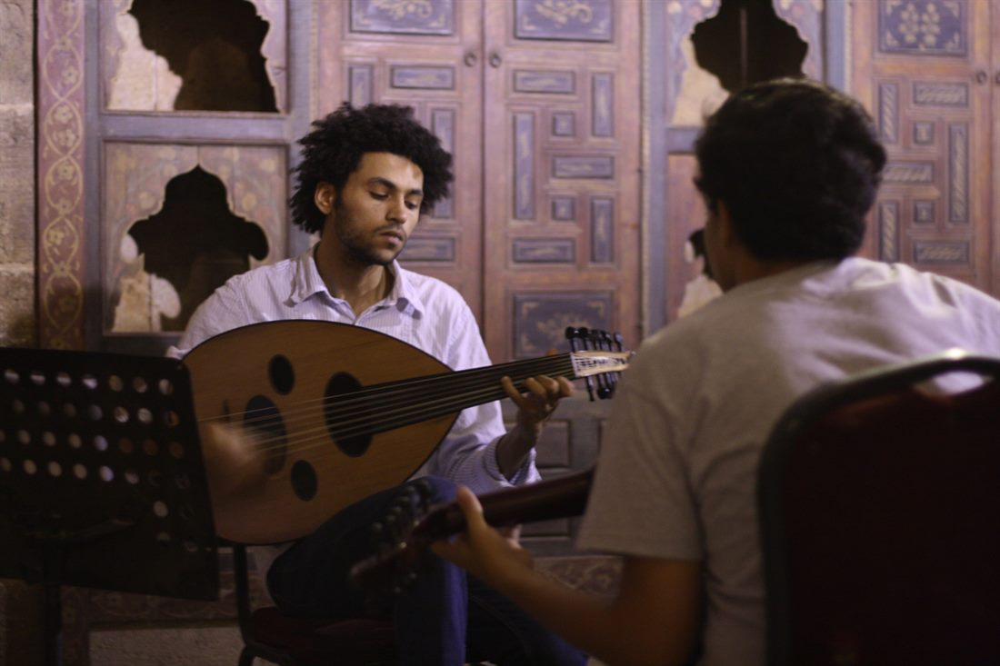

תרבות שלמה אפשר להכיר דרך שלושה דברים פשוטים: מה אנשים אוכלים, איזו מוזיקה הם שומעים, ואיך הם מארחים. בעולם הערבי שלושת אלה קשורים זה בזה בחוט אחד, והחוט הזה הוא תמיד אותו דבר: לחבר בין אנשים. בואו נטעם, נקשיב, ונתארח.
השולחן שמחבר בין אנשים
המטבח של העולם הערבי הוא אחד העשירים בעולם, ורובו כבר מוכר ואהוב עלינו. חומוס קטיפתי, פלאפל פריך, טבולה ירוקה ורעננה, ולצידם מנות חמות גדולות כמו מקלובה ההפוכה או מנסף חגיגי. אבל מעל הכל מרחפת מנה אחת מתוקה שכבשה את כולם: כנאפה, גבינה חמה וחוטים זהובים בסירופ, שנולדה בעיר שכם והפכה לסמל.

הסוד הוא לא רק בטעם, אלא במנהג. ארוחה אינה אירוע פרטי אלא מעשה של שיתוף: צלחות שמונחות במרכז, ידיים שמושטות יחד, ותמיד יותר אוכל ממה שצריך, כי שולחן מלא הוא שפת האהבה של הבית.
בעולם הערבי, להאכיל מישהו זה לומר לו "אכפת לי ממך" בלי מילים.
צלילי העוד והקול הגדול
אם לתרבות הערבית יש פסקול, הוא מתחיל בכלי אחד: העוד (عُود, עוּד). זהו כלי פריטה עתיק, עגול וחם, שנחשב לסבא הקדמון של הלאוטה והגיטרה האירופית. לצידו מנגנים הקאנון, הנאי והדרבוקה, וכולם יחד יוצרים את ה"מקאם", שיטה מוזיקלית עשירה שיודעת לגעת ישר בלב.

ומעל הצלילים האלה עלו הקולות הגדולים. אום כלת'ום המצרייה, שריתקה עולם שלם לרדיו בכל ערב חמישי, ופיירוז הלבנונית, שקולה הפך לפסקול של בקרים שלמים. עד היום, די בכמה תווים מוכרים כדי שכל שולחן יתחיל לפזם.
הקפה, האירוח ושפת הכבוד
ובמרכז הכל עומד טקס אחד שמסכם את הכל: הקפה. בעולם הערבי הקפה (قَهْوَة, קַהְוֶה) איננו משקה אלא הצהרה. הוא מוגש לאורח עוד לפני שהספיק לשבת, נמזג בספלים קטנים ושוב ושוב, וכל מחווה סביבו טעונה במשמעות של כבוד ונדיבות.

וזה רק חלק משפה שלמה של מנהגים. אומרים "אַהְלַן וַסַהְלַן" (أهلاً وسهلاً) כברכת "ברוכים הבאים" חמה, מניחים יד על הלב כדי להביע כנות, ומתעקשים שהאורח יישאר עוד קצת, ויטעם עוד משהו. הנדיבות, ה"כַּרַם", איננה רק מחווה יפה אלא ערך מרכזי שעליו גדלים.
וזה בדיוק מה שהופך את לימוד השפה למסע כל כך מתגמל. כי מאחורי כל מילה מסתתרים שולחן, מנגינה ומנהג, וברגע שמתחילים לדבר, נפתחת דלת לעולם שלם של חום אנושי.
רוצים להיכנס לעולם הזה מבפנים?
ב"שפה בקליק" לומדים ערבית מדוברת בצורה קלה ונעימה, עם תעתיק עברי ובלי אותיות מסובכות, כדי שתוכלו לדבר עם אנשים ולהרגיש את התרבות מקרוב. אפשר להתחיל בשיחת ייעוץ קצרה, חינם ובלי התחייבות.
לשיחת ייעוץ חינם